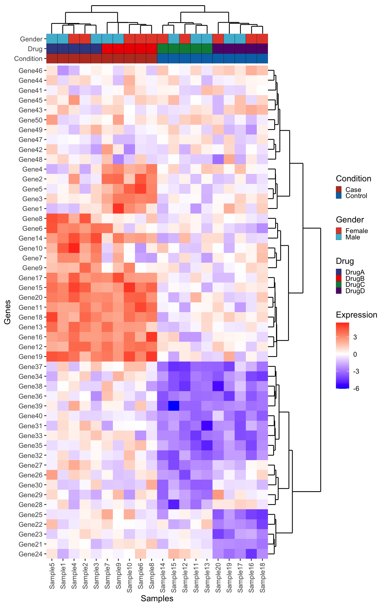

Dealing with missing data and NaN (Not a Number) values is a common challenge in R programming. These values can affect the results of your analyses and visualizations. It’s essential to handle missing data appropriately, either by imputing them or excluding them from the analysis, depending on the context.
Example:
# Creating a dataframe with missing valuesdf<-data.frame( x =c(1, 2, NA, 4), y =c(5, NA, 7, 8))# Check for missing valuessum(is.na(df))
[1] 2
# Understanding missing or sparse informationsummary(read_tsv)
CHROM POS REF ALT
Length:10427 Min. : 2107407 Length:10427 Length:10427
Class :character 1st Qu.: 38008521 Class :character Class :character
Mode :character Median : 73553346 Mode :character Mode :character
Mean : 75250958
3rd Qu.:107567817
Max. :195169782
NA's :1
set NORMAL.GT NORMAL.AD NORMAL.AF
Length:10427 Length:10427 Length:10427 Min. :0.0000000
Class :character Class :character Class :character 1st Qu.:0.0000000
Mode :character Mode :character Mode :character Median :0.0000000
Mean :0.0001637
3rd Qu.:0.0000000
Max. :0.0408200
NA's :1
NORMAL.DP TUMOR.GT TUMOR.AD TUMOR.AF
Min. : 31.0 Length:10427 Length:10427 Min. :0.05063
1st Qu.: 67.0 Class :character Class :character 1st Qu.:0.41860
Median : 97.0 Mode :character Mode :character Median :0.48247
Mean : 118.3 Mean :0.48403
3rd Qu.: 148.0 3rd Qu.:0.54217
Max. :1351.0 Max. :1.00000
NA's :2 NA's :1
TUMOR.DP Consequence SYMBOL Feature_type
Min. : 31.00 Length:10427 Length:10427 Length:10427
1st Qu.: 45.00 Class :character Class :character Class :character
Median : 65.00 Mode :character Mode :character Mode :character
Mean : 79.68
3rd Qu.: 98.00
Max. :813.00
NA's :2
Feature cDNA_position CDS_position Protein_position
Length:10427 Length:10427 Length:10427 Length:10427
Class :character Class :character Class :character Class :character
Mode :character Mode :character Mode :character Mode :character
Amino_acids Codons NORMAL.REF.AD NORMAL.ALT.AD
Length:10427 Length:10427 Min. : 30.0 Min. :0.00000
Class :character Class :character 1st Qu.: 67.0 1st Qu.:0.00000
Mode :character Mode :character Median : 97.0 Median :0.00000
Mean : 118.2 Mean :0.01928
3rd Qu.: 148.0 3rd Qu.:0.00000
Max. :1350.0 Max. :2.00000
NA's :2 NA's :2
TUMOR.REF.AD TUMOR.ALT.AD
Min. : 0.00 Min. : 4.00
1st Qu.: 23.00 1st Qu.: 21.00
Median : 34.00 Median : 31.00
Mean : 41.68 Mean : 37.96
3rd Qu.: 52.00 3rd Qu.: 47.00
Max. :691.00 Max. :229.00
NA's :2 NA's :2
CHROM POS REF ALT set NORMAL.GT NORMAL.AD NORMAL.AF
9862 chr9 53503887 AACAC AAC mutect-varscan AACAC/AACAC <NA> 0.014
10272 <NA> NA <NA> <NA> <NA> <NA> <NA> NA
NORMAL.DP TUMOR.GT TUMOR.AD TUMOR.AF TUMOR.DP Consequence SYMBOL
9862 NA AACAC/. <NA> 0.184 NA intron_variant Atm
10272 NA <NA> <NA> NA NA <NA> <NA>
Feature_type Feature cDNA_position CDS_position
9862 Transcript ENSMUST00000232179.1
10272 <NA> <NA> <NA> <NA>
Protein_position Amino_acids Codons NORMAL.REF.AD NORMAL.ALT.AD
9862 NA NA
10272 <NA> <NA> <NA> NA NA
TUMOR.REF.AD TUMOR.ALT.AD
9862 NA NA
10272 NA NA
Data organization and structure: Factors
Columns that contain strings are automatically read in as character vectors and are arranged alphanumericall. Factors assign a logical order to a series of samples.
library(ggplot2)# Organize the chromosomes to the correct order# If CHROM is a character vector, the chromosomes are not ordered properlystr(read_tsv)# Shows that CHROM variable is a character vector
# make CHROM a factorread_tsv$CHROM<-factor(read_tsv$CHROM, levels =paste0("chr", c(1:22, 'X','Y')))str(read_tsv)# shows that CHROM variable is a factor with a set order of character strings
When running R code, you may encounter errors related to missing packages or dependencies. This occurs when you try to use functions or libraries that are not installed on your system. This will commonly look like a red error stating “There is no package…” Installing the required packages using install.packages(“package_name”) can resolve this issue.
# Trying to use a function from an uninstalled packagelibrary(ggplot2)ggplot(df, aes(x, y))+geom_point()# Error: there is no package called 'ggplot2'
Where do I go for help?
Stack Exchange
Online communities like Stack Exchange, particularly the Stack Overflow platform, are excellent resources for getting help with R programming. You can search for solutions to specific problems or ask questions if you’re facing challenges. If you attempt to Google what you’re trying to accomplish with your dataset, StackExchange often includes responses from others who may have gone through this effort before. With the open crowdsourcing of troubleshooting, these responses that work for others are “upvoted” so that you can try to adapt the code to work for your dataset. Importantly, take care to change the names of variables and file paths in any code that you try to implement from others.
ChatGPT
ChatGPT is an AI assistant that can provide guidance and answer questions related to R programming. You can ask for clarification on concepts, debugging assistance, or advice on best practices. If you copy/paste an error into ChatGPT, it often tries to debug without any other preface. However, if you try to explain exactly what your code is trying to accomplish, it can be a helpful way to debug your help.
Good practices
##Commenting your code Adding comments to your code is crucial for making it more understandable to yourself and others. Comments provide context and explanations for the code’s functionality, making it easier to troubleshoot and maintain.
Publicly accessible resources
Github
Github hosts numerous repositories containing R scripts, packages, and projects. Browsing through repositories and contributing to open-source projects can help you learn from others’ code and collaborate with the R community. This can be a direct way to make your code available upon publication, according to journal practices.
How do I apply the code I’ve learned to my own data?
Once you’ve learned R programming basics, applying the code to your own data involves understanding your data structure, identifying relevant functions and packages, and adapting example code to suit your specific analysis goals.
Additional practice
# Read in the file "/cloud/project/data/bulk_rna/GSE48035_ILMN.Counts.SampleSubset.ProteinCodingGenes.tsv"# Describe the size, shape, and organization of this data file.# Example: Applying code to your own data# Load your datasetmy_data<-read.csv("my_data.csv")# Explore the structure of your datastr(my_data)# Identify relevant variables and features# HINT: Use colnames() and tidyverse functions to clean up your data# Perform analysis or visualization using appropriate functions and packages# HINT: Use ggpubr functions to parallelize statistics across groups# Adapt example code to suit your data and analysis goals# HINT: Try different methods of plotting. Consider what important features you're trying to understand and show with this data.# Comment your code for clarity and future reference# HINT: Make your life easier when it comes time for reproducing your figures and filling in that "Data and Code Availability" section of your manuscript.
First we will load the data from the supplemental table (download here):
library(tidyverse)library(readxl)library(ggrepel)log2_df<-read_excel("data/science.abj4008_table_s2.xlsx")# Always good practice to check the data to ensure it was loaded correctly:# head(log2_df)# The plot only contains the IL2 results from CRISPRa screens,# so we will filter downlog2_df_filter<-log2_df%>%filter(Cytokine=="IL2", CRISPRa_or_i=="CRISPRa")# Select genes that we want to label based on top LFCngenes_label<-16label_genes<-log2_df_filter%>%filter(Screen_Version=="Primary")%>%# For ease only use primary donorgroup_by(sign(LFC))%>%# Group by the sign (pos or neg) lfcarrange(desc(abs(LFC)))%>%# Sort by descending absolute lfc valuesslice_head(n =ngenes_label)%>%# Take the top n genespull(Gene)# Pull these out from the data frame# We need to pivot the Screen_Version variable (which is equivalent to Donor1 and Donor 2) into separate columnslog2_df_filter_wide<-log2_df_filter%>%pivot_wider(id_cols =c("Gene", "Hit_Type"), names_from ="Screen_Version", values_from ="LFC")%>%filter(!is.na(Primary), !is.na(CD4_Supplement))# Reorder the factor so that we can plot the hits on toplog2_df_filter_wide$Hit_Type<-factor(log2_df_filter_wide$Hit_Type, levels =c("Positive Hit", "Negative Hit", "NA"), labels =c("Positive Hit", "Negative Hit", "Not a Hit"))# Now we can plot:final_plot<-log2_df_filter_wide%>%# This will order by the factor so the hits are plotted on toparrange(desc(Hit_Type))%>%ggplot(aes(x =Primary, y =CD4_Supplement))+geom_hline(yintercept =0, linetype ="dashed")+geom_vline(xintercept =0, linetype ="dashed")+geom_point(aes(color =Hit_Type))+stat_density_2d(color ="black")+# For this geom text, we filter the original data to only include# genes that we want labeled from the above filteringgeom_text_repel( data =filter(log2_df_filter_wide, Gene%in%label_genes),aes(label =Gene, colour =Hit_Type), size =0.36*7, show.legend =F, max.overlaps =Inf)+scale_colour_manual(values =c("Positive Hit"="red", "Not a Hit"="grey80", "Negative Hit"="blue"))+theme_bw()+theme( panel.grid =element_blank(),# Place legend inside the plot legend.position =c(0.85, 0.15),# Change vertical spacing between legend items legend.key.height =unit(3, "mm"),# Place a box around the legend legend.background =element_rect(fill =NA, color ="black"))+labs( x ="Donor 1, log2FoldChange", y ="Donor 2, log2FoldChange", title ="IL-2 CRISPRa Screen", color ="Screen Hit")# We can save our plot if desired# ggsave(final_plot, file = "my_pretty_plot.pdf", width = 5, height = 4)# And now view itfinal_plot
Create a Custom Heatmap
Here we will use the excellent R package patchwork to compose a complex heatmap, that is both clustered and plotted next to relevant sample metadata and dendrograms.

Setup Toy Data
NOTE: This is not important for understanding how to plot, but kept here in case you want to adjust some of these parameters to see what happens!
# Load necessary librarieslibrary(tidyverse)library(patchwork)# Set seed for reproducibilityset.seed(3)# Generate gene expression datagenes<-paste0("Gene", 1:50)samples<-paste0("Sample", 1:20)expression_data<-matrix(rnorm(50*20), nrow =50, dimnames =list(genes, samples))# Introduce differential expression for case vs controlidx_case_genes<-1:20idx_conrol_genes<-21:40idx_case_samples<-1:10idx_control_samples<-11:20expression_data[idx_case_genes, idx_case_samples]<-expression_data[idx_case_genes, idx_case_samples]+3expression_data[idx_conrol_genes, idx_control_samples]<-expression_data[idx_conrol_genes, idx_control_samples]-3# Some drug specific effectsexpression_data[1:5, 1:5]<-expression_data[1:5, 1:5]-3expression_data[6:10, 6:10]<-expression_data[6:10, 6:10]-3expression_data[21:25, 11:15]<-expression_data[21:25, 11:15]+3expression_data[26:30, 16:20]<-expression_data[26:30, 16:20]+3# Create some metadatametadata<-data.frame( Sample =samples, Condition =rep(c("Case", "Control"), each =10), Gender =rep(c("Male", "Female"), times =10), Drug =c(rep("DrugA", 5), rep("DrugB", 5), rep("DrugC", 5), rep("DrugD", 5)))
Approach 1 - ggplot2
We have a matrix of gene expression values:
And associated metadata:
Let’s reshape our data into long format to make it possible to plot with ggplot2:
# Reshape the data into long format for ggplot2. Here we use the tidyverse# family of packages but there are many ways to approach this reshaping of dataexpression_long<-expression_data%>%# Convert the matrix to a data frameas.data.frame()%>%# Move the rownames into a columnrownames_to_column("Gene")%>%# Here we pivot the table, all columns except for the gene columnpivot_longer(cols =!Gene, names_to ="Sample", values_to ="Expression")
Now we have a data frame with each row representing the expression of a single gene from a single sample:
It seems there are some patterns in the data, but at this point the samples and genes are not yet clustered.
To view the structure in the data we will first cluster on samples:
# Perform hierarchical clustering:## 1. Compute a sample-wise distance matrixdist_matrix_samples<-dist(t(scale(expression_data)), method ="euclidean")## 2. Perform hierarchical clusteringhclust_samples<-hclust(dist_matrix_samples, method ="ward.D2")## 3. Pull out the order of the samples from the hclust objectordered_samples<-hclust_samples$labels[hclust_samples$order]
And then cluster on genes. Note that here we don’t t() to transpose the matrix, and this cluster on genes instead of samples. These functions expect the variable being clustered to be in the rows of the corresponding matrix.
# Perform hierarchical clustering:## 1. Compute a sample-wise distance matrixdist_matrix_genes<-dist(scale(expression_data), method ="euclidean")## 2. Perform hierarchical clusteringhclust_genes<-hclust(dist_matrix_genes, method ="ward.D2")## 3. Pull out the order of the genes from the hclust objectordered_genes<-hclust_genes$labels[hclust_genes$order]
Now we can reorder the input data as we plot using fct_relevel()
# Plot heatmap using ggplot2heatmap_plot<-ggplot(expression_long, aes(x =fct_relevel(Sample, ordered_samples), y =fct_relevel(Gene, ordered_genes), fill =Expression))+geom_tile()+scale_fill_gradient2(low ="blue", high ="red", mid ="white", midpoint =0)+labs(title =NULL, x ="Samples", y ="Genes")+guides(x =guide_axis(angle =90))+theme( axis.line =element_blank(), panel.background =element_blank(), plot.margin =margin(t =0, r =3, b =3, l =3, unit ="mm"))heatmap_plot
What does plot.margin do?
To improve aesthetics, we carefully control the spacing around plots using the theme element plot.margin. This option is specified by using a function called margin() and tells ggplot how much space to leave around your plots:
plot+theme( plot.margin =margin(t =0, r =3, b =3, l =3, unit ="mm"))
Metadata plot
Create the metadata plot in ggplot.
library(ggnewscale)library(ggsci)# Options for legend width and heightsguide_kwd<-0.5guide_kht<-0.5# Create metadata plotmetadata_plot<-ggplot(metadata, aes(x =fct_relevel(Sample, ordered_samples)))+geom_tile(aes(y ="Condition", fill =Condition), color ="black")+# Here we tell the order of the legendsscale_fill_nejm(guide =guide_legend( order =1, keywidth =guide_kwd, keyheight =guide_kht))+ggnewscale::new_scale_fill()+geom_tile(aes(y ="Drug", fill =Drug), color ="black")+scale_fill_aaas(guide =guide_legend( order =2, keywidth =guide_kwd, keyheight =guide_kht))+ggnewscale::new_scale_fill()+geom_tile(aes(y ="Gender", fill =Gender), color ="black")+scale_fill_npg(guide =guide_legend( order =2, keywidth =guide_kwd, keyheight =guide_kht))+# Limits set the order of the main panelscale_y_discrete( limits =c("Condition", "Drug", "Gender"), expand =c(0, 0))+# Adjust theme elements to remove redundant text etctheme( axis.line =element_blank(), panel.background =element_blank(), legend.position ="right")+labs(x =NULL, y =NULL)+guides(x =guide_axis(angle =90))metadata_plot+coord_fixed()# We add coord fixed just to fit with legend
Why do we use ggnewscale?
We are using a package called ggnewscale to specify three distinct color scales for the seperate geom_tile() metadata rows. We then set guide=... within the geom_tile() function to specify the order of the legends. If we didn’t do this, the legends would be merged across all metadata categories, which we don’t want.
Merge the metadata and heatmap plots together
# Compute relative heights of main and metadata plotrel_height<-nrow(expression_data)/3# Since we have 3 metadata categories# Adjust the formatting to adjust the plot margin, remove the axis text and ticksmetadata_plot<-metadata_plot+theme( axis.ticks.x =element_blank(), axis.text.x =element_blank(), plot.margin =margin(t =0, r =3, b =0, l =3, unit ="mm"))# Combine plots with patchworkcombined_plot<-metadata_plot+heatmap_plot+plot_layout(heights =c(1, rel_height), ncol =1, guides ="collect")# Print the combined plotcombined_plot
Add Dendrograms
Now we will use ggdendro to add dendrograms in the margins.
Tip
Another good package for plotting ‘tree’ (aka hierarchical trees) data is ggtree.
library(ggdendro)dendro_top<-ggdendrogram(hclust_samples, rotate =FALSE, theme_dendro =TRUE)+# This expands the y axis to fill the full panel below, and 5% extra space abovescale_y_continuous(expand =expansion(mult =c(0, 0.05)))+# We need to null the x to remove the space# between the dendrogram and the plotlabs(x =NULL, y =NULL)+theme( axis.text.y =element_blank(), axis.text.x =element_blank())# Layoutdendro_top+metadata_plot+plot_layout(ncol =1, heights =c(0.5, 1))&scale_x_discrete(expand =expansion(mult =c(0.05, 0.05)))
Likewise for genes:
dendro_side<-ggdendrogram(hclust_genes, rotate =TRUE, theme_dendro =TRUE)+# This expands the x axis to fill the full panel below, and 5% extra space abovescale_y_continuous(expand =expansion(mult =c(0, 0.05)))+# We need to null the x to remove the space# between the dendrogram and the plotlabs(x =NULL, y =NULL)+scale_x_discrete(expand =expansion(mult =c(0.01, 0.01)))+theme( axis.text.x =element_blank(), axis.text.y.left =element_blank(), plot.margin =margin(t =0, r =3, b =0, l =0, unit ="mm"))# Layout(heatmap_plot+scale_y_discrete(expand =expansion(mult =c(0, 0))))+dendro_side+plot_layout(nrow =1, widths =c(1, 0.25), guides ="collect", axes ="collect")
What is scale_y_continuous(expand = expansion(mult = c(0, 0.05))) doing?
We use this to adjust the total space the given axis takes up in the panel – either stretching the axis to fill the plot, or leave a slight gap either below/above (for the y-axis) or left/right (for the x-axis). See the function documentation for more explanation and examples.
So why do we need this? This is needed because we want to ensure the dendrogram is aligned with the main heatmap plot. In this case it required a bit of tweaking to get the values correct. Feel free to adjust the values or remove these adjustments entirely to see what happens!
Put it all together
Now we need to combine all of these plots together. We think of each plot as a patch in a grid, and also use the plot_spacer() function from patchwork to fill in the empty gap in this figure.
# To help we are going to customize each plot margin now to make sure things fit nicely# Note the default for margin is 0 space on all sidesdendro_top_final<-dendro_top+theme(plot.margin =margin())+scale_x_discrete(expand =expansion(mult =c(0.025, 0.025)))metadata_plot_final<-metadata_plot+theme(plot.margin =margin())+scale_x_discrete(expand =c(0,0))heatmap_plot_final<-heatmap_plot+theme(plot.margin =margin())+scale_x_discrete(expand =expansion(mult =c(0, 0)))+scale_y_discrete(expand =c(0, 0))dendro_side_final<-dendro_side+theme(plot.margin =margin())+scale_x_discrete(expand =expansion(mult =c(0.01, 0.01)))# The default plot spacer has too much space for our purposes so we set# plot.margin to be 0ps<-plot_spacer()+theme(plot.margin =margin())# Plot the plot!dendro_top_final+ps+metadata_plot_final+ps+heatmap_plot_final+dendro_side_final+plot_layout(ncol =2, widths =c(1, 0.25), heights =c(1, 1, rel_height), guides ="collect")
Bonus Challenge
Can you add a boxplot summarizing the mean expression of each gene to the right of this plot (in between the dendrogram and the main heatmap)? Think carefully about which data should be input to create this plot. Give it a try before opening up the solution below:
Bonus Challenge Solution
First create the boxplot using the long form expression data. Note that because the boxplot is going to be horizontal, the x-axis represents the numeric expression values, while the y-axis represents the individual genes. Also, don’t forget to reorder the genes
Now we add this into our big patchwork. Note: we also have to add extra spacers since our patchwork has an extra column. Finally, we use the free() function from patchwork to make sure our expression boxplot label is ‘free’ to move next to the plot. Remove this piece of code to see what happens to the label.
# Also remove the axis text. We kept to verify the gene orderinggenexp_boxplot_final<-genexp_boxplot+theme( axis.text.y =element_blank(), axis.ticks.y =element_blank(), plot.margin =margin())# The default plot spacer has too much space for our purposes so we set# plot.margin to be 0ps<-plot_spacer()+theme(plot.margin =margin())# Plot the plot!dendro_top_final+ps+ps+metadata_plot_final+ps+ps+heatmap_plot_final+free(genexp_boxplot_final, type ="label", side ="b")+dendro_side_final+plot_layout(ncol =3, widths =c(1, 0.25, 0.25), heights =c(1, 1, rel_height), guides ="collect")
Approach 2 - Live Recreation using ggplot2
Recreated live with just the input data and final plot. Note the similarities and differences to the first approach.
Another great package for composing complex heatmaps is the aptly named ComplexHeatmap. While some like the customization and syntax of ggplot2, ComplexHeatmap can accomplish this figure with arguably far less effort. See the example below using the same code:
library(ComplexHeatmap)# Note that ComplexHeatmap uses the matrix directlyHeatmap( matrix =expression_data, name ="Expression", clustering_method_columns ="ward.D2", clustering_method_rows ="ward.D2")
Add the column annotation following the instructions provided by the ComplexHeatmap authors here.
# Expects sample names in rowsmeta_ht<-metadata%>%column_to_rownames("Sample")# Set up the colorsmeta_cols<-list("Condition"=c("Case"="#BC3C29FF","Control"="#0072B5FF"),"Drug"=c("DrugA"="#3B4992FF","DrugB"="#EE0000FF","DrugC"="#008B45FF","DrugD"="#631879FF"),"Sex"=c("Male"="#E64B35FF","Female"="#4DBBD5FF"))top_anno<-HeatmapAnnotation( df =meta_ht, col =meta_cols)Heatmap( matrix =expression_data, name ="Expression", clustering_method_columns ="ward.D2", clustering_method_rows ="ward.D2", top_annotation =top_anno)
Add the boxplot
right_anno<-HeatmapAnnotation(Expression =anno_boxplot(expression_data), which ="row")Heatmap( matrix =expression_data, name ="Expression", clustering_method_columns ="ward.D2", clustering_method_rows ="ward.D2", top_annotation =top_anno, right_annotation =right_anno)
There are many additional parameters and ways to customize ComplexHeatmap plots. Refer to the extensive documentation. In many cases it may be easier to see if you can achieve the type of plot you want with ComplexHeatmap before attempting one with ggplot2. It may help with more rapid data exploration as well since it tends to take far less code to get to a quality figure.